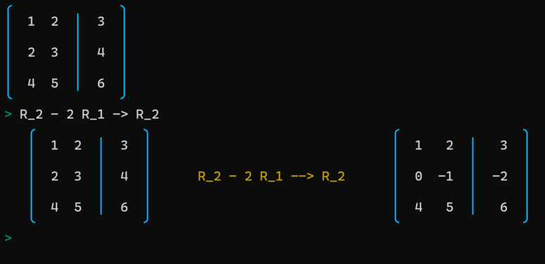

Mathematics
Gauss-Jordan Assistant: I have created a tool
that can be used to help in teaching computations using Gauss-Jordan elimination.

Fourier series [Uses Tangle, Flot and MathJax.]
Taylor series [Uses Tangle, Flot and MathJax.]
In addition to creating some content on my own, I have adapted some demonstrations found elsewhere, many of which were created by David Austin. The link to the original version is included on the left side of this page, as well as at the bottom of each page linked from here.
For Linear Algebra, I have a simplified French version of MathCortex. The link to my version is on the French column; the original linked above, created and constantly improved by Gorkem Gencay, is already in English and is more complete than the version I have adapted.
Optics
Mathématiques
Livre que j'ai écrit : Introduction à l'algèbre linéaire
Assistant Gauss-Jordan: j'ai créé un petit logiciel qui peut être utile dans l'enseignement lorsque l'élimination gaussienne doit être utilisée dans des calculs.
Séries de Fourier [Utilise Tangle, Flot et MathJax.]
Séries de Taylor [Utilise Tangle, Flot et MathJax.]
Pour l'algèbre linéaire, vous pouvez utiliser cette calculatrice pour l'algèbre linéaire pour vérifier tous vos calculs numériques, que ce soit pour des simples opérations avec des matrices (addition, multiplication, etc.), pour le calcul de la transposée, de l'inverse, du déterminant, des valeurs propres, etc.
Autres activités interactives
Les activités suivantes ont été adaptées à partir d'activités créées par David Austin.
Combinaison linéaire [Version originale]
Modèles de couleur [Version originale]
Transformation linéaire [Version originale]
Translation et coordonnées homogènes [Version originale]
Coefficients de Fourier [Version originale]
Déterminant [Version originale]
Sous-espace engendré [Version originale]
Vecteurs propres [Version originale]